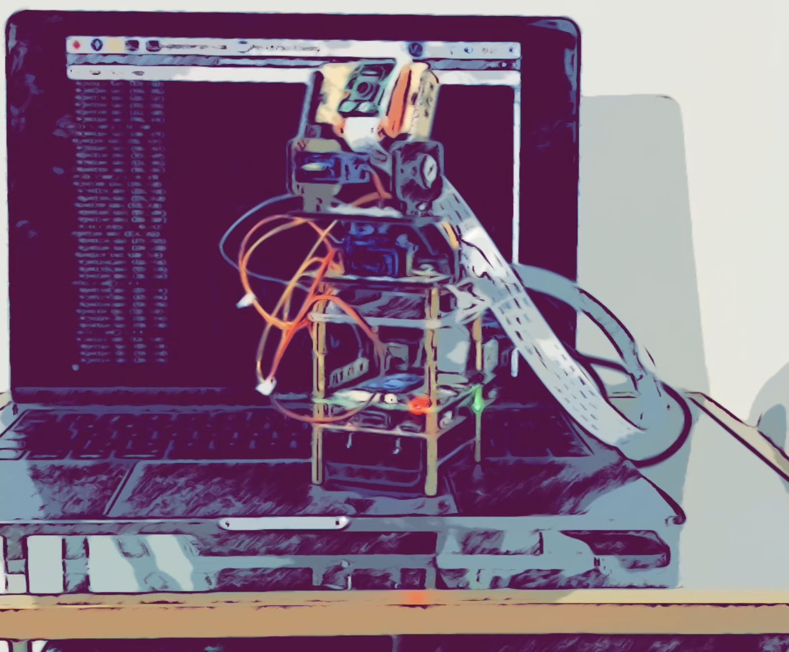
无线技术赋能边缘计算处理器，本文不一定讲的清楚，本人视野有一定产业局限性，故有些问题可能存在以偏概全的嫌疑。文章以项目为起点，试图以点带线，其实是项目过程中的思考和与同行交流的思想碰撞。
AI视觉云台实现逻辑
因甲方要求，需要搭建一个视觉跟踪云台，涉及视觉跟踪，手上现有SoC运算能力有限，加上片上硬件资源没有支持MIPI-CSI接口，没办法直接挂摄像头，手边正好有块树莓派板子，直接用上。
Raspberry Pi 树莓派目前已经出到第四代4B版本，我使用的为第四代4B版本。项目上使用到树莓派如下几个部分：CPU，Wi-Fi图传和SSH，MIPI-CSI接口，GPIO控制。
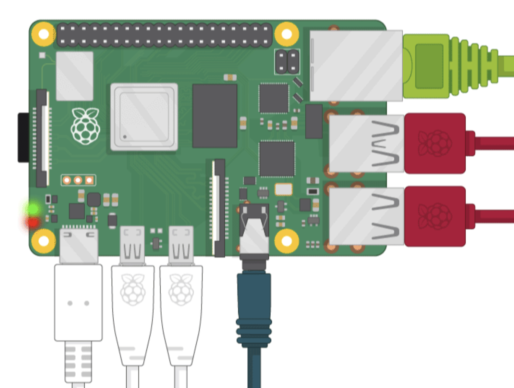
相对于树莓派3，树莓派4的CPU性能已经得到极大提升（3x），考虑到人脸跟踪，730P@30Fps的图像采集，顺手加上手边的算力棒加速人脸识别推理工作，算力棒为Intel neural compute stick 2，算力大概在4T。
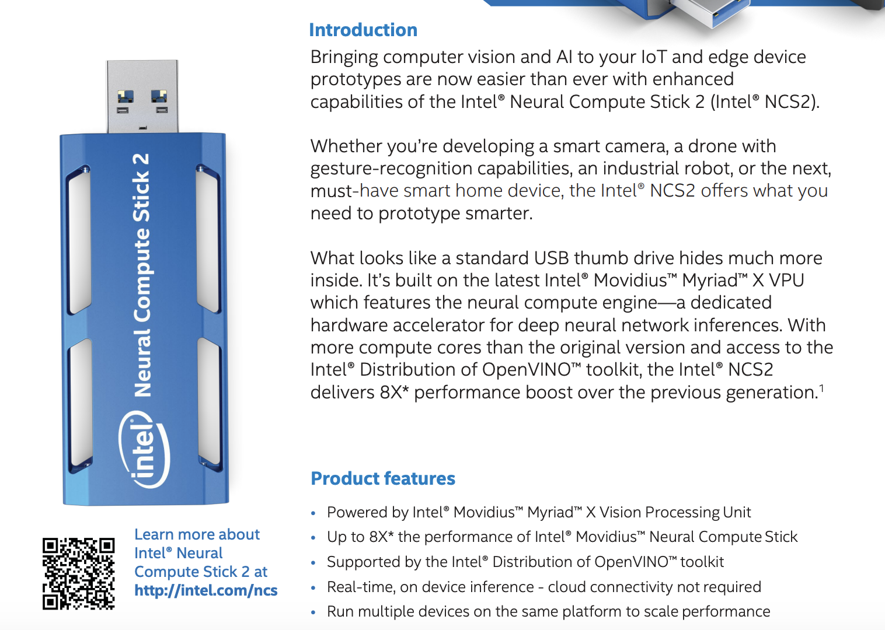
下一步需要做摄像头跟踪，此阶段需要搭建云台系统，根据识别的人脸位置与图片中心位置差值，调整云台对准人脸，所使用的云台为两个SG-90舵机组成(不要买大功率舵机，树莓派驱动电流有限，带不动)。
整个项目先是在树莓派上使用PYTHON3调试，OpenCV +Intel OpenVINO 来做视频数据采集和人脸识别（人脸识别模型库采用OpenVINO已经训练好的模型，不需要自己再训练），另起两个线程来做云台pan，tilt差值和pid调节。
调试过程中，发现伺服电机PID调节和控制非常棘手，树莓派输出的pwm不稳，其他Python任务执行过程会影响pwm的输出，抖动严重，PID调参抖动大，图像差值和pan，tilt无法形成闭环回路，错误的pid输出，导致云台输出位置错误，位置错误反过来又影响摄像头人脸捕捉。
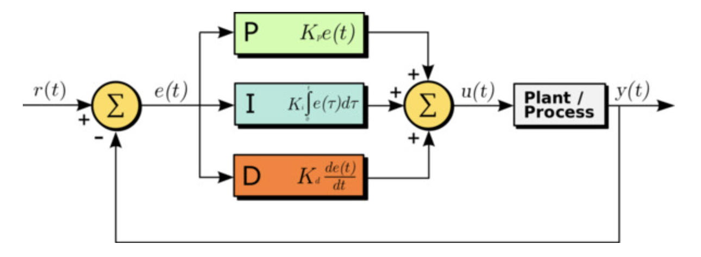
解决办法是拿一个MCU，TI TM4C Launchpad开发板处理伺服电机的驱动和PID调节。在实时控制方面，MCU的优势非常明显，硬件pwm，精准设置，调整方便，输出实时。反应在舵机上的表现为给定目标占空比，舵机移动到该坐标位置不抖动，在电机驱动调试完毕之后利用串口调试助手调节x轴y轴的PID参数，一切准备就绪后指定串口数据包格式，准备接收树莓派发送过来的pan tilt位置差值。（Demo中加了一个电池包，用来给树莓派系统供电，省去Type C有线供电）。
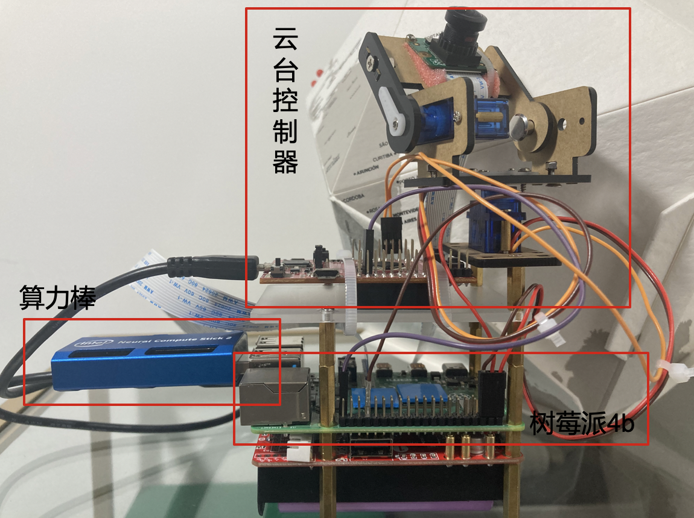
硬件上，树莓派CPU负责视频采集，Intel Movidius 算力棒负责每帧图片的人脸推理，MCU协处理器负责云台伺服电机控制，树莓派4B片上 Wi-Fi模块负责图传到云端显示以及SSH。
软件上，在linux 系统用python3完成整个控制逻辑，cv模块负责视频数据采集，人脸推理，计算人脸位置差值，uart发送云台位置指令给MCU；MCU采用C编程，设置PWM频率及占空比，编程增量PID控制程序，调试x轴，y轴PID 参数Kp，Ki，Kd，等待串口终端树莓派的指令。
边缘计算需求
云台搭建并不算复杂，但该视觉项目需求具有AIoT产品代表性：对物理世界进行数据采集，AI深度学习推理&挖掘，GPIO，PWM实时控制，毫秒级微秒级定时器设置，Wi-Fi 蓝牙无线传输。场景落地例如，人脸识别考勤机，门禁系统，停车系统轧机，视频监控，门铃等。本地端的处理器完成视频&音频采集+处理，MCU控制输出，HMI显示，以及AI，深度学习，推理（训练一般不会放在边缘计算节点），此类应用均可以归纳称为边缘计算应用行列。
边缘计算 + 物联网无线
科学技术在AI，算法，集成芯片领域的发展迅猛，呈几何形增长。为适应市场需要，ARM阵营在处理器内核上推新不断，A35，A53，A55，A72，A73，RISC-V也不甘示弱。芯片厂家结合自身需求，推出单核，双核，三核处理器以提高整体运算速度，在通用ARM/RISC-V内核无法满足深度学习，神经网络计算时，AIoT应用下的ARM/MIPS + GPU/NPU（0.5T-10T）的边缘计算处理器孕育而生。
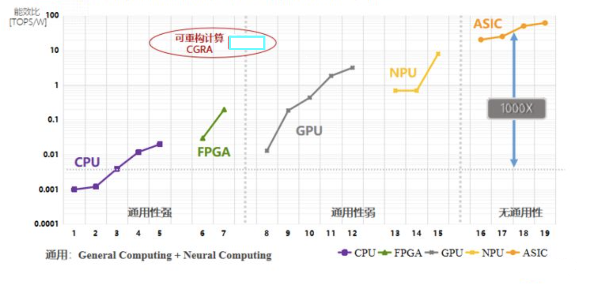
当技术不再成为思想的桎梏，出现了很多企业迅猛发展的现象级案例，下面从三个方向举例说明：
大音频
智能音响算大音频市场的代表产品之一，以阿里，百度，小米互联网公司为代表。功能需求包括麦克风阵列识音，TTS，ASR，AEC，Codec编解码，经典蓝牙播放，Wi-Fi云播放等。内核处理器统筹任务调度，控制数据流向，驱动WiFi,BT协议，协处理器DSP用来处理音频相关算法和音频编解码，Wifi BT COMBO芯片负责无线数据传输。
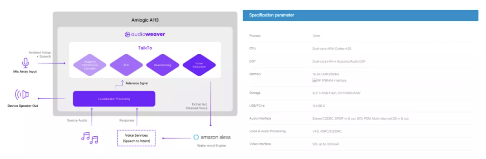
TWS耳机系统架构和智能音箱有差异，TWS耳机通常以单颗SoC解决方案完成，（相比于智能音箱以Processor + Wifi/BT COMBO + Linux），片上SoC运行RTOS系统，内部架构可细分为 MCU + DSP + RF Radio。
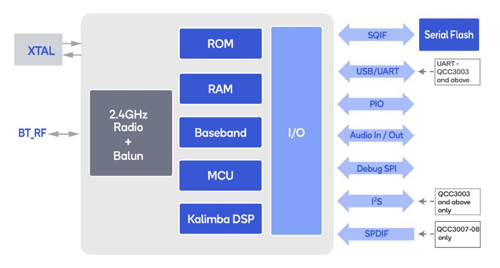
大视频
网络摄像机算是近两年视频监控行业出彩的产品。处理器负责视频采集，ISP对图像信号优化处理，视频经过H.264，H.265 1080p@30fps编码后，通过有线或者无线进行图传。在AI算法的驱使下，单目，双目人脸识别，3D结构光姿态识别等应用要求处理器能在本地完成图像比对，推理，NPU AI深度学习推理，控制执行单元。
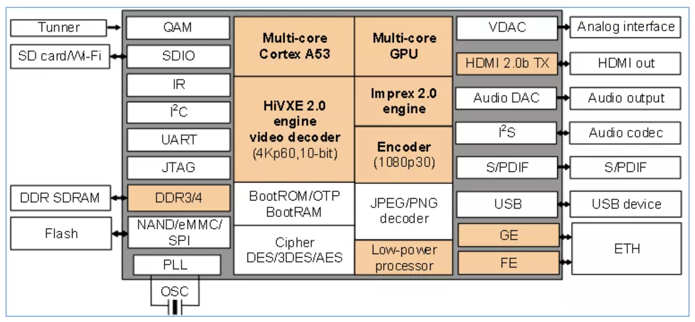
低功耗门铃产品侧重强调处理器毫秒级快速唤醒进行视频抓拍，微安级低待机功耗，微安级别WiFi长连接的功耗，ISP图像处理等，但目前主流几家低功耗摄像机芯片厂家在原有架构上加上NPU单元，努力适应AI行业新的发展方向，君正的T40更是加上了一颗RISC-V，可以作为一颗实时MCU，管理整个系统。
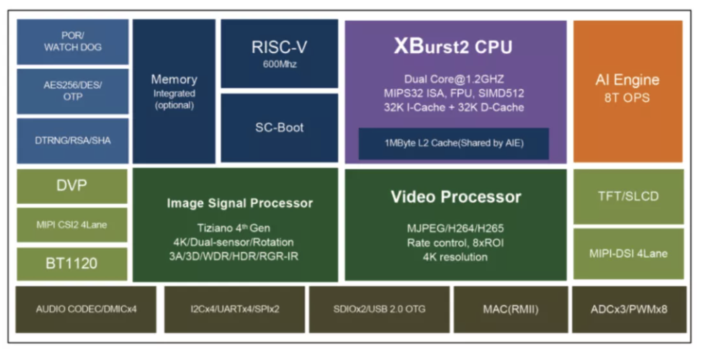
大感知
手表，温控器，门锁，各类传感器，门磁，烟雾探测器，定位器，胎心监都可算做大感知类产品，所涉及的系统已经由采用MCU + RF Radio 的SoC满足，Nordic，NXP，Siliconlab，TI 等。
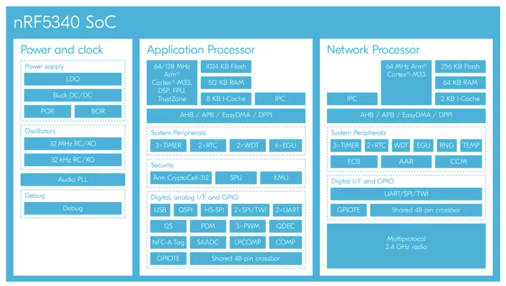
AIoT处理器厂家不断在性能，晶片面积，功耗三方面进行权衡，优化与迭代，随之而来是需要更合适的无线产品与之匹配，多协议，低功耗，高集成，易开发，SoC或者COMBO。
从端到边缘，无线技术赋能AI处理器
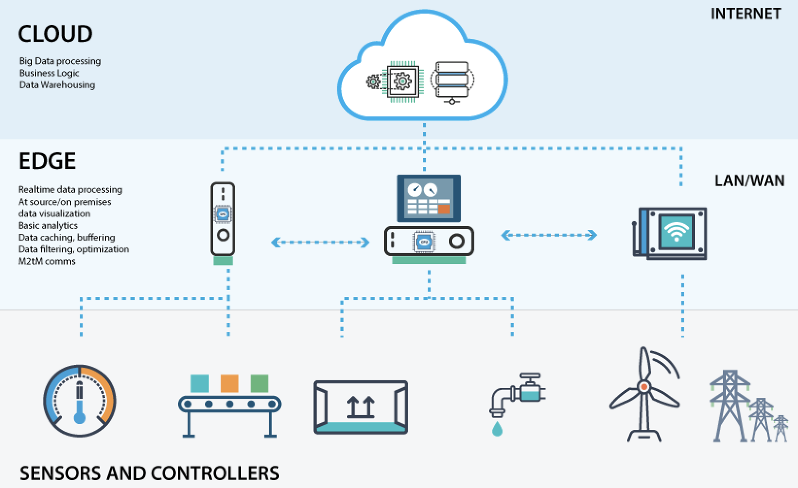
Bluetooth, Zigbee, 2.4G私有协议，Sub 1G私有协议，Lora为代表的无线网络典型应用集中在端上，在边缘多以Gateway的产品形态呈现；Wi-Fi SoC和Wi-Fi BT COMBO芯片可在端或者边缘呈现，在端处，以视频类应用为主；在边缘计算产品中，多与Linux，安卓系统配合，Wifi起到联网数据传输和蓝牙起到音频传输作用。
AIoT边缘计算芯片 片上系统继续在RTOS和Linux系统的博弈中，新的架构和更强的性能对无线产品提出更高的要求：Wi-Fi 和主控间的适配采用SDIO还是SPI；协议栈在主控还是在SoC上；Wifi 5G 频段支持与否；IoT WI-FI 6的应用场景在哪里落地；COMBO芯片能否支持CHIP（Alliance，Zigbee）；COMBO芯片是否能释放内部内核给用户二次开发；如何支持LE AUDIO等等。在AIoT SoC芯片更迭百花齐放的同时，无线芯片亦在架构之争当中；新的产品将孕育新的无线模块生意模式以及新的IDH，产业链在内卷中升级。
「Bluetooth5 堂 微信交流群」
助力行业内朋友打通无线圈子,构建一个物联网无线生态。
集高通，Nordic，Dialog，ST，Silicon lab, NXP, AMBIQ等蓝牙芯片原厂技术，市场，销售
集华为，MTK，泰凌微，凌思微，盛源达，ASR，华普微，中颖电子芯片原厂
集Arrow，北高智，迅通，世强，利尔达等一线原厂代理FAE和业务
集小米，华米，绿米，涂鸦，雅观，百度，出门问问，京东互联网公司及方案公司研发
集蓝牙认证机构，被动器件，射频公司，以及SIG大佬
申请流程：
① 因群人数已超过限制人，请先微信扫描我微信二维码，添加Xcoder微信号（blecoder），添加微信时请将您的个人信息进行备注，以便登记，同时也欢迎同行和我进行交流。
② 由于需要我逐个邀请入群，所以请大家耐心等待！谢谢理解与支持！